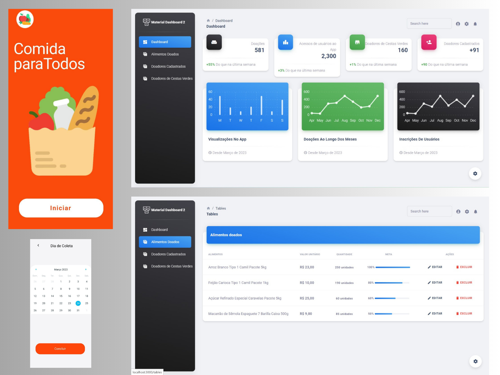
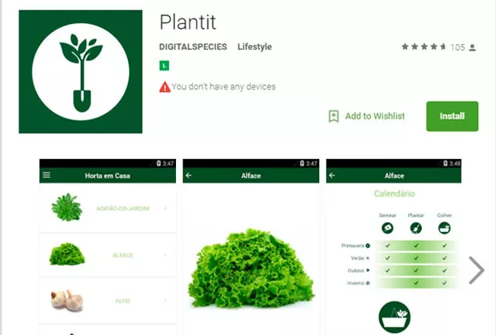
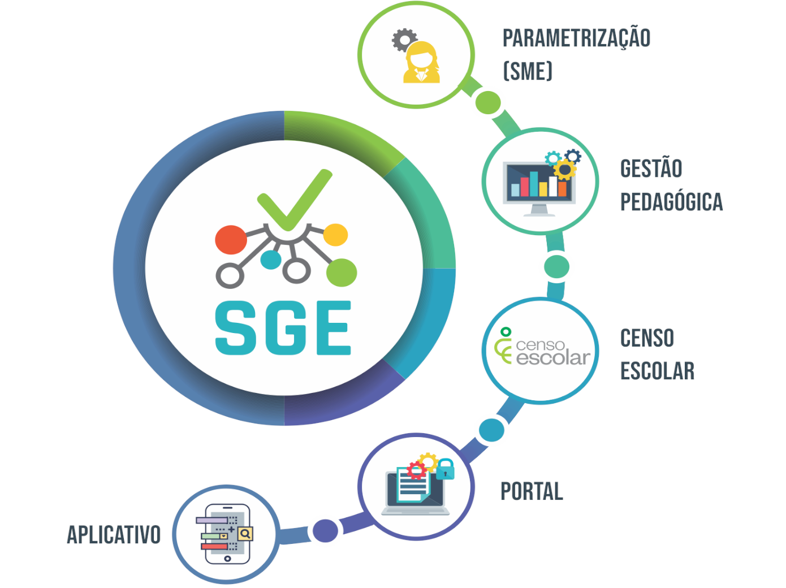

Projetos em Destaque
Conheça alguns dos principais projetos desenvolvidos pelos alunos e professores do curso de Sistemas de Informação.

Plataforma de Doação de Alimentos
Sistema web que conecta doadores e instituições sociais, facilitando a distribuição de alimentos.
Responsáveis: Ana Clara, João Pedro, Prof. Carla

Aplicativo de Monitoramento de Plantas
App que utiliza sensores IoT para monitorar umidade, temperatura e luminosidade em plantações.
Responsáveis: Lucas Silva, Mariana Costa

Sistema de Gestão Escolar Integrado
Ferramenta que centraliza notas, frequência e comunicação entre escola, alunos e pais.
Responsáveis: Beatriz Lima, Prof. Fernando
Chatbot para Atendimento Acadêmico
Chatbot treinado para tirar dúvidas frequentes sobre o curso e o campus, com IA generativa.
Responsáveis: Gustavo Henrique, Julia Rocha